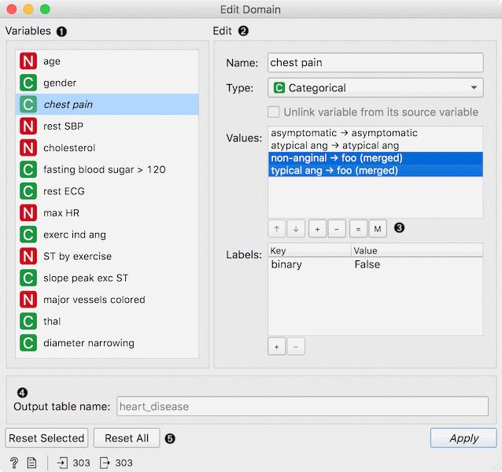
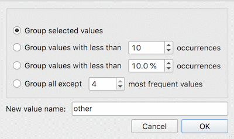
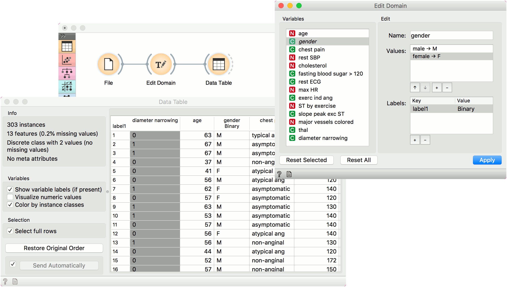

Edit Domain
Rename features and their values.
Inputs
- Data: input dataset
Outputs
- Data: dataset with edited domain
This widget can be used to edit/change a dataset’s domain - rename features, rename or merge values of categorical features, add a categorical value, and assign labels.

- All features (including meta attributes) from the input dataset are listed in the Variables list. Selecting one feature displays an editor on the right.
- Editing options:
- Change the name of the feature.
- Change the type of the feature. For example, convert a string variable to categorical.
- Unlink variable from its source variable. This option removes existing computation for a variable (say for Cluster how clustering was computed), making it ‘plain’. This enables merging variables with same names in Merge Data.
- Change the value names for discrete features in the Values list box. Double-click to edit the name.
- Add, remove or edit additional feature annotations in the Labels box. Add a new label with the + button and add the Key and Value for the new entry. Key will be displayed in the top left corner of the Data Table, while values will appear below the specified column. Remove an existing label with the - button.
- Reorder or merge values of categorical features. To reorder the values (for example, to display them in Distributions, use the up and down keys at the bottom of the box. To add or remove a value, use + and - buttons. Select two or more variables and click = to merge them into a single value. Use the M button to merge variables on condition.
- Rename the output table. Useful for displaying table names in Venn Diagram.
- To revert the changes made to the selected feature, press the Reset Selected button while the feature is selected in the Variables list. Pressing Reset All will remove all the changes to the domain. Press Apply to send the new domain to the output.
Merging options

- Group selected values: selected cateogorical values become a single variable.
- Group values with less than N occurrences: values which appear less than N times in the data, will be grouped into a single value.
- Group values with less than % occurrences: values which appear less then X % of the time in the data, will be grouped into a single value.
- Group all except N most frequent values: all values but the N most frequent will be grouped into a single variable.
- New value name: the name of the grouped value.
Example
Below, we demonstrate how to simply edit an existing domain. We selected the heart_disease.tab dataset and edited the gender attribute. Where in the original we had the values female and male, we changed it into F for female and M for male. Then we used the down key to switch the order of the variables. Finally, we added a label to mark that the attribute is binary. We can observe the edited data in the Data Table widget.
